Projektion von einer Produkttopologie als stetig offene Abbildung
1. Satz
Sei 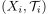 eine Familie von topologische Räumen und für 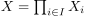 die Produkttopologie  gegeben.
Dann ist die Projektion 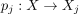 für 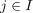 stetig und offen
gegeben.
Dann ist die Projektion 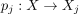 für 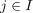 stetig und offen
2. Beweis
2.1. stetig
folgt aus der Charakterisierung der Produkttopologie als gröbste Topologie für stetige Projektionen bzw. Initialtopologie der Projektionen
2.2. offene Abbildung
Sei 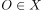 offen und gegeben, so ist  Durchschnitt von endlich vielen Urbildern offener Mengen der Projektionen 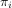
Da gilt: 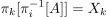 für 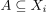 folgt:
Durchschnitt von endlich vielen Urbildern offener Mengen der Projektionen 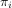
Da gilt: 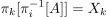 für 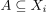 folgt:
- falls ein im Durchschnitt gegeben ist, so ist das Bild offen, und zwar der (endliche) Durchschnitt der ursprünglich für das Urbild ausgewählten, offenen Mengen - und damit ebenfalls offen
Ansonsten ist das Bild der ganze Raum und damit ebenfalls offen